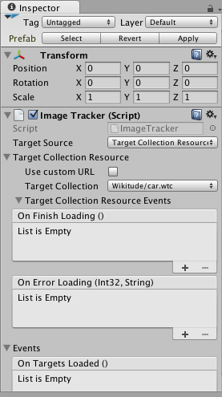

Migration Notes
Migration notes for the Wikitude Unity Plugin
Migrate from 7.1.0 to 7.2.0
The minimum Unity version was increased to 5.4.2.
Initialization of WikitudeCamera and the internal SDK was moved from Awake to Start. This means WikitudeCamera properties can now be easily changed from script, as long they are done before the Start method is called on the WikitudeCamera.
ImageTracker and InstantTracker now have a new option called Legacy Scale. In previous versions of the plugin, the augmentations needed to be scaled by a factor of 10 to match their targets. In the new version, this is no longer required. However, for backwards compatibility, the Legacy Scale allows developers to re-enable the old behavior. Keep in mind that this option will be removed in future versions and is only intended to ease the transition of existing projects.
Migrate from 7.0.0 to 7.1.0
No changes.
Migrate from 2.1.0 to 7.0.0
Version 7.0.0 increases the minimum required version for Unity to 5.4.0. Please make sure to also upgrade Unity if you are using an older version, otherwise the plugin will not work properly.
Version 7.0.0 also increases the minimum iOS version to 9.0 and the minimum Android version to Android 4.4(19). Please update minSdkVersion to 19 in the manifest of your App or build.gradle if you export to a gradle project.
To align the Unity API with that of the Wikitude Native SDK, the general TrackableBehaviour component has been deprecated, and was replaced with ImageTrackable, ObjectTrackable and InstantTrackable. These new trackables also have different events. So instead of the generic OnEnterFieldOfVision from the previous version, the ImageTrackable has an equivalent OnImageRecognized event, with an ImageTarget parameter, instead of just a string. Similar events are present in the other trackers.
When you update to the new API, please make sure to never mix the new Trackables with the deprecated TrackableBehaviour, as this is not supported.
The new Trackable components now have an additional Drawable field. This was added to support multiple targets for ImageTrackers, but the API is available for all Trackables. Please see the Image Tracking examples for more information about multiple targets.
Additionally, some sample scripts were renamed. If you are upgrading and importing the samples as well, please check fo duplicate scripts, or for scripts that should not be present in the project anymore.
Migrate from 2.0.0 to 2.1.0
Version 2.1.0 adds a new value to the FrameColorSpace enum used for Plugins and Input Plugins. Because of this, when loading a scene that contains a WikitudeCamera component configured to use Input Plugins, the deserialized value of the enum will be incorrect. Please set it to the appropriate value for your use case after upgrading to 2.1.0.
Migrate from 1.4.0 to 2.0.0
Version 2.0.0 deprecates the ClientTracker and the CloudTracker classes. When before you used the ClientTracker to recognize images, it is recommended to switch to the new ImageTracker, in combination with a TargetCollectionResource. Instead of the CloudTracker, the same ImageTracker can be used, but with a CloudRecognitionService, instead. You can select between the TargetCollectionResource and the CloudRecognitionService in the ImageTracker inspector, in the first dropdown menu. Finally, if you used the ClientTracker to track 3D targets, you can now use the new ObjectTracker with a TargetCollectionResource for this.
To help migrate your project to the new APIs, the inspectors of the old classes have a button that allows you to automatically upgrade the script component with the appropriate replacement.

When you press the button, a warning message will appear, informing you that during the upgrade process, the properties set on the old tracker will be migrated to the new one, but events will not. This would not be possible, because in most cases you need to update the script functions receiving the events to the appropriate signature.

After pressing OK, GameObject will have the new component instead. If you are not happy with the result, or something went wrong, you can undo this operation.

Keep in mind that you still need to update the source code, where references to the old trackers are used.
For example, the Runtime Tracker sample used to create a ClientTracker with a custom remote URL.
GameObject trackerObject = new GameObject("ClientTracker");
_currentTracker = trackerObject.AddComponent<ClientTracker>();
_currentTracker.UseCustomUrl = true;
_currentTracker.TargetPath = Url.text;
_currentTracker.OnTrackerFinishedLoading.AddListener(OnTrackerFinishedLoading);
_currentTracker.OnTrackerLoadingError.AddListener(OnTrackerLoadingError);
Here is how the sample would look like when using the new ImageTracker and APIs.
GameObject trackerObject = new GameObject("ImageTracker");
_currentTracker = trackerObject.AddComponent<ImageTracker>();
_currentTracker.TargetSourceType = TargetSourceType.TargetCollectionResource;
_currentTracker.TargetCollectionResource = new TargetCollectionResource();
_currentTracker.TargetCollectionResource.UseCustomURL = true;
_currentTracker.TargetCollectionResource.TargetPath = Url.text;
_currentTracker.TargetCollectionResource.OnFinishLoading.AddListener(OnFinishLoading);
_currentTracker.TargetCollectionResource.OnErrorLoading.AddListener(OnErrorLoading);
_currentTracker.OnTargetsLoaded.AddListener(OnTargetsLoaded);
_currentTracker.OnErrorLoadingTargets.AddListener(OnErrorLoadingTargets);
The old trackers are still kept for backwards compatibility, but will be removed in a future version, so please update to the new ones.
Additionally, the CloudTrackable was removed from the samples. If you are upgrading from an older version, please make sure that this script is no longer in your projects, otherwise you might encounter compilation errors.
Migrate from 1.1.0 to 1.2.0
Version 1.2.0 simplifies the WikitudeCamera prefab. It is now a single GameObject, without the hierarchy it previously had. If you had any changes to the prefab, except for the license key, please make sure to back it up first.
Because the previous hierarchy is gone, the camera feed is no longer explicitly exposed in the editor, but you can still access it through the CameraTexture property on the WikitudeCamera script.
Migrate from 1.0.1 to 1.1.0
Version 1.1.0 contains many breaking changes to the plugin, so before upgrading, please backup your project, to prevent accidentally losing your work.
Wikitude classes are now concrete and sealed and expose Unity events to communicate. This means that now you can add them directly to game objects and subscribe to their events through the editor or at runtime in code. When adding subscribers to events, make sure you use the dynamic version of your method, when there is a choice between static and dynamic (please see the Client Recognition examples for more information on how to set up Client Trackers).
Values that were set in the inspector for these classes will need to be reset because of the change in class name and their internal representation.
The classes that previously derived from them will no longer work, so they need to be updated to receive events. On your game objects, you will get missing mono classes after updating. These should be replaced with the corresponding classes in the Wikitude plugin (Wikitude/Dependencies/WikitudeUnityPlugin) and the values need to be reintroduced.
All function names in Wikitude classes now begin with a capital letter.
When building for iOS, if you choose to append over a build made with a previous version, you will end up with two versions of the Wikitude plugin in your project, one located in Plugins/iOS and the new one in Plugins/Wikitude/iOS. Please make sure that only the new one is used. Alternatively, you can redo the build from scratch using the steps from the Setup Guide section.
Migration Example
This section will show how to migrate the example project from version 1.0.1 to work with the new version of the plugin.
(Optional)Delete theDependencies,EditorandPluginsfolders. The plugin folder has changed drastically in this version. If you don't delete these folders, the correct files should still be replaced with the new version. However, the samples will not work correctly because magazine.wtc will be inStreamingAssetsfolder instead ofStreamingAssets/Wikitude. Since we won't be using the samples in this example, this step can be skipped.- Delete the
Wikitude/Samplesfolder. TheSamplesfolder is for illustration purposes only and is not needed in development. - Update
ClientTrackerscript.Wikitude.IClientTrackerhas been renamed toWikitude.ClientTrackerand is a sealed class. As such, theClientTrackerscript should be changed to derive fromMonoBehaviourinstead and it's methods should be simple, instead of override. These methods will be set as callbacks in the Inspector. The class name should also be changed to avoid clashes with the Wikitude class. - Similar steps should be taken to update the
CloudTrackerscript. Additionally, since it no longer derives fromWikitude.CloudTracker, it will need a reference to it so that it can callStartContinuousRecognition. - Similar steps should be taken to update the
SurferBehaviourscript. - Delete
MagazineTracker,TrackableBehaviourandWikitudeCamerascripts. Since Wikitude classes are concrete now, they can be assigned directly to GameObjects, so there is no need for these empty classes anymore. - Open the scene called
mainfrom theScenesfolder. - Select the
WikitudeCameraGameObject from the Hierarchy and enter your license key in the appropriate field in the Inspector. If the script is missing, add theWikitudeCamerascript from theDependencies/WikitudeUnityPlugindll. - Create a new GameObject and add the script you updated at step 3 to it.
- Select the
ClientTrackerGameObject from the Hierarchy and from theTarget Collectiondropdown selectmagazine.wtc. Then, for each event you want to subscribe to, press the plus sign, set the GameObject created at step 9 to the fieldNone (Object)and select the corresponding function callback. Please see Client Recognition examples for more information on how to work with Unity Events. - Select the
WikitudeEyeGameObject from the Hierarchy and add the script you updated at step 5 to it. - Select the
TrackableGameObject from the Hierarchy and in theTarget Patternfield enter * to track all targets. In the events foldout, subscribe the script you added to WikitudeEye to bothOn Enter Field Of VisionandOn Exit Field Of Visionevents.
The project should now work as before.